Port Security & Accès SSH Sécurisé sur Switch Cisco
Sécurité L2 · Cisco Packet Tracer · IOS · Port Security (sticky / static MAC) · AAA local · SSH v2
Ce lab traite deux volets complémentaires du durcissement d'un switch d'accès Cisco. D'abord, le Port Security : limiter chaque port à une seule adresse MAC connue, avec trois modes de réaction différents à une violation (shutdown, protect, restrict), pour comprendre concrètement ce qui change entre chacun. Ensuite, la sécurisation de l'accès administrateur au switch lui-même : remplacer Telnet en clair par SSH v2, avec authentification locale (AAA), génération de clés RSA et durcissement des lignes VTY.
Environnement
Outil Cisco Packet Tracer
Switch 2960-24TT
Ports testés Fa0/3, Fa0/4, Fa0/5
VLAN mgmt VLAN1 – 192.168.1.0/24
Accès admin SSH v2, clé RSA 1024 bits
Port Security — Contrôle d'Accès par Adresse MAC
Chaque port d'accès est limité à une seule adresse MAC autorisée. Trois ports sont configurés successivement, chacun avec un mode de réaction différent à une violation, afin de comparer leur comportement en conditions identiques.
Port Fa0/3 — MAC dynamique apprise (sticky) + violation shutdown
Topologie de départ : deux PC (PC0, PC1) reliés au switch, plus un ordinateur portable connecté à distance qui servira plus tard de poste d'administration.
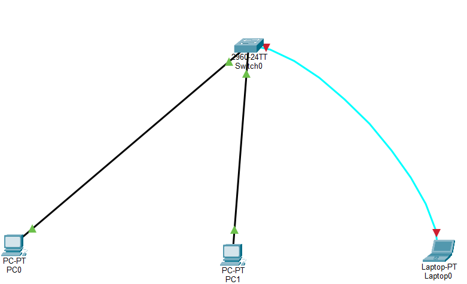
Sur Fa0/3, le port security est activé avec une seule adresse MAC autorisée. Plutôt que de saisir la MAC manuellement, mac-address sticky demande au switch d'apprendre dynamiquement la première adresse MAC vue puis de la figer dans la configuration. En cas de violation, le port passe en shutdown (err-disabled) — c'est le mode par défaut, le plus strict.
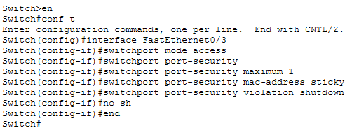
Le show running-config confirme que la MAC apprise a bien été convertie en entrée statique dans la configuration (switchport port-security mac-address sticky apparaît désormais sans variable — le switch l'a figée).
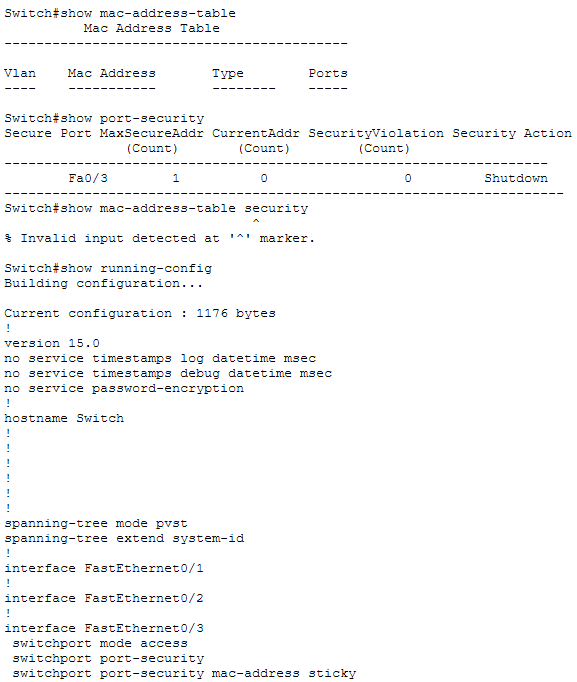
Port Fa0/4 — violation protect
Un troisième PC (PC2) est ajouté à la topologie. Le port Fa0/4 est configuré avec le même principe (1 MAC max) mais un mode de violation différent : protect. Contrairement à shutdown, le port reste actif — il se contente de rejeter silencieusement le trafic de toute adresse MAC non autorisée, sans générer d'alerte ni incrémenter de compteur de violation.
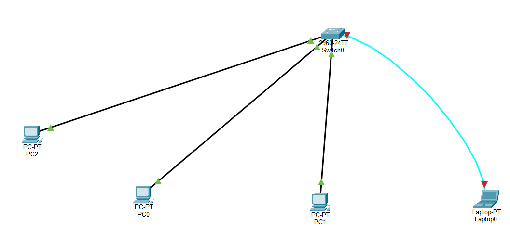
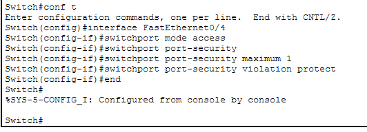
show port-security confirme les deux ports actifs avec leurs modes respectifs : Fa0/3 en Shutdown, Fa0/4 en Protect.
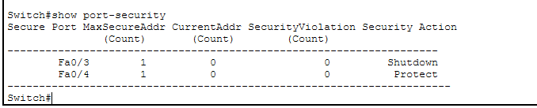
Port Fa0/5 — MAC statique + violation restrict
Un quatrième PC (PC3) rejoint la topologie. Sur Fa0/5, l'adresse MAC autorisée est cette fois saisie manuellement (0090.215B.4CD1) plutôt qu'apprise dynamiquement — utile quand on connaît à l'avance le poste légitime à connecter. Le mode de violation choisi est restrict : comme protect, le trafic non autorisé est rejeté sans couper le port, mais contrairement à protect, chaque violation est comptabilisée et journalisée (SNMP trap / syslog).
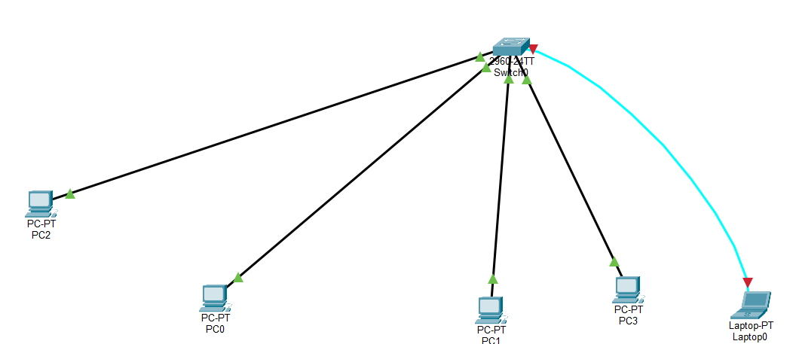
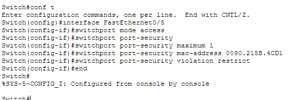
Vérification finale des trois ports : Fa0/5 affiche CurrentAddr = 1 (la MAC statique est immédiatement comptée, contrairement au sticky qui n'apparaît qu'après la première trame reçue).
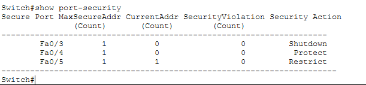
| Mode de violation | Port reste actif ? | Trafic non autorisé | Compteur / Log | Récupération |
|---|---|---|---|---|
| Shutdown (Fa0/3) | Non — passe en err-disabled | Bloqué, port coupé entièrement | Oui, syslog immédiat | Manuelle (shutdown / no shutdown) |
| Protect (Fa0/4) | Oui | Rejeté silencieusement | Non | Automatique, rien à faire |
| Restrict (Fa0/5) | Oui | Rejeté | Oui, compteur + syslog | Automatique, rien à faire |
Bilan : les trois modes atteignent le même objectif (empêcher un poste non autorisé de parler sur le port) mais avec des compromis différents. Shutdown est le plus visible et le plus sûr mais demande une intervention manuelle — adapté à un port critique où toute anomalie doit remonter immédiatement. Protect est transparent mais silencieux — risqué en production car une tentative d'intrusion physique ne laisse aucune trace. Restrict offre le meilleur compromis pour la plupart des ports d'accès : service non interrompu, mais visibilité complète sur les tentatives.
Sécurisation de l'Accès Administrateur — SSH v2
Une fois les ports d'accès verrouillés, le switch lui-même doit être administrable de façon sécurisée. Objectif : remplacer un accès Telnet en clair par du SSH v2 authentifié, avec un compte local dédié plutôt qu'un mot de passe partagé sur la ligne VTY.
Interface de management et poste d'administration
Le VLAN de management (VLAN1) reçoit une adresse IP pour devenir joignable en réseau : 192.168.1.254/24.
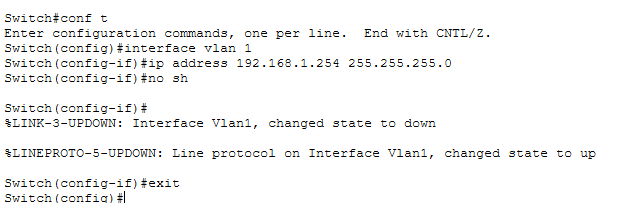
Le poste d'administration (le laptop distant vu dans la topologie) reçoit une IP statique sur le même sous-réseau : 192.168.1.25/24.
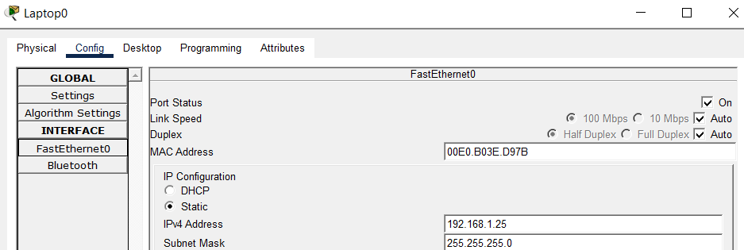
Authentification locale (AAA) et compte administrateur
aaa new-model active le sous-système AAA, puis aaa authentication login default local indique que les tentatives de connexion doivent être vérifiées contre la base d'utilisateurs locale. La commande aaa authorization exec default local échoue en revanche avec "Invalid input detected" — l'image IOS utilisée par Packet Tracer pour ce modèle ne supporte pas cette syntaxe d'autorisation. Le compte administrateur est tout de même créé avec le niveau de privilège maximal (15) et un mot de passe chiffré (secret), puis service password-encryption chiffre les mots de passe restants en clair dans la configuration.
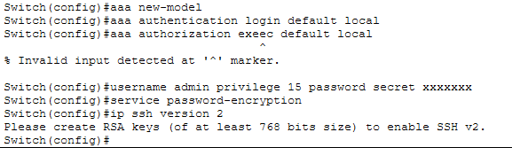
Nom de domaine et génération des clés RSA
SSH nécessite un nom d'hôte non générique et un domaine pour générer sa paire de clés RSA. Une fois hostname et ip domain-name définis, crypto key generate rsa produit une paire de clés de 1024 bits — le prérequis technique qui active de fait SSH sur le switch.
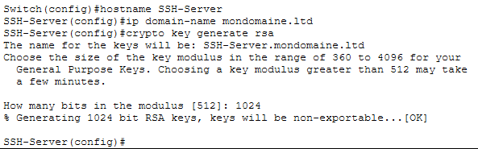
Durcissement des lignes VTY
Les lignes VTY (0 à 15, soit toutes les sessions distantes possibles) sont configurées avec SSH v2 activé, un nombre de tentatives d'authentification limité à 5 et un délai d'inactivité de 90 secondes avant déconnexion automatique — deux mesures qui réduisent la fenêtre d'attaque en cas de brute-force ou de session laissée ouverte.
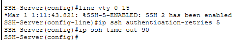
Bilan : l'accès administrateur au switch repose désormais sur un compte local nommé (traçabilité individuelle plutôt qu'un mot de passe VTY partagé), transporté par un canal chiffré (SSH v2, clé RSA 1024 bits), avec un nombre de tentatives et un timeout limités. Point de vigilance identifié pendant le lab : aaa authorization exec n'a pas pu être appliqué avec cette image IOS — l'authentification fonctionne, mais l'autorisation fine des commandes post-connexion resterait à valider sur un équipement réel ou une image IOS plus récente.